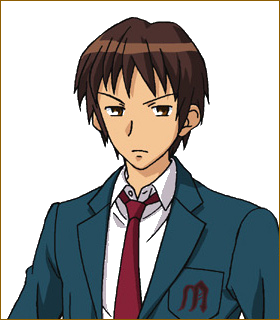

点击图片以切换人物介绍

阿虚 (キョン Kyon) 至今无人知晓其真名
高一5班，男性，团内的顶梁柱（自认为），凉宫的1号跑腿，专业吐槽人员。在建团之初，被凉宫擅自认定为团员而入团的开团功臣。
真实身份——普通人类（同样是自认为。从某方面来说，是团内最不正常的人。
话虽如此，但若想寻找正常的校园社团，请不要点击图片切换到下一个人物。直接前往下一个页面是明智的选择。
阿虚 (キョン Kyon) 至今无人知晓其真名
高一5班，男性，团内的顶梁柱（自认为），凉宫的1号跑腿，专业吐槽人员。在建团之初，被凉宫擅自认定为团员而入团的开团功臣。
真实身份——普通人类（同样是自认为。从某方面来说，是团内最不正常的人。
话虽如此，但若想寻找正常的校园社团，请不要点击图片切换到下一个人物。直接前往下一个页面是明智的选择。